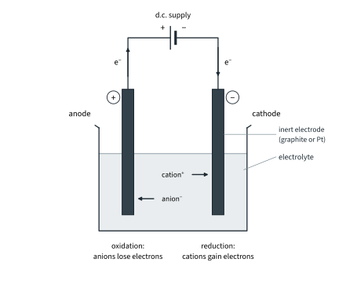
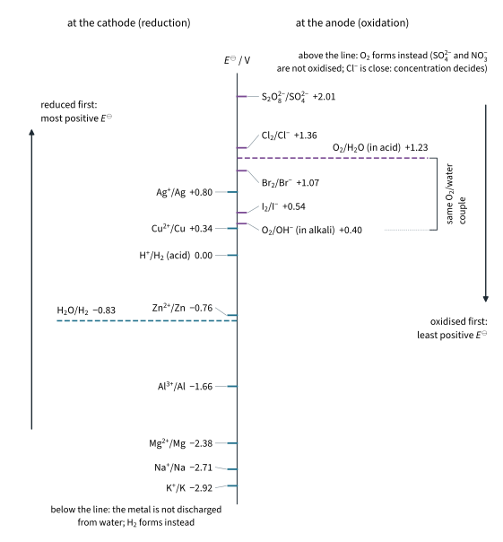
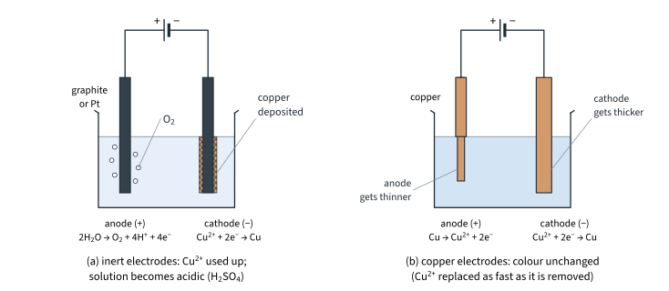
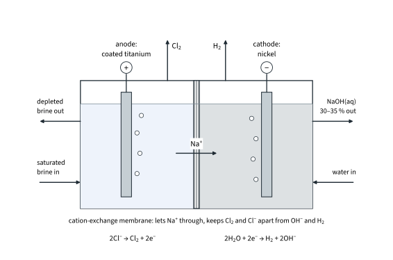
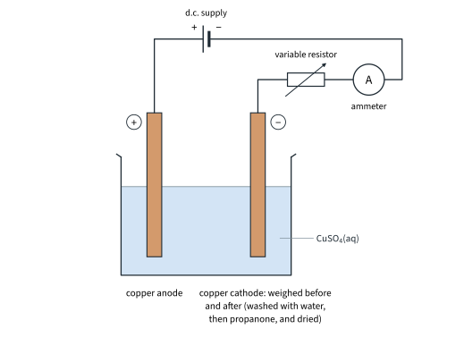
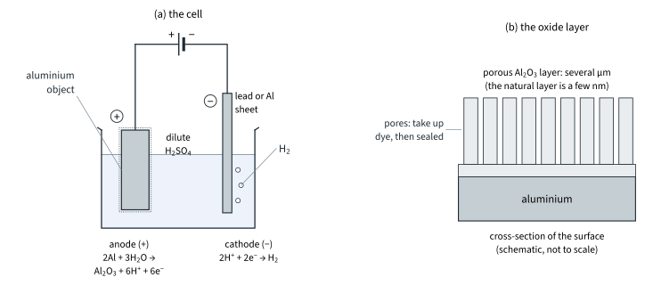
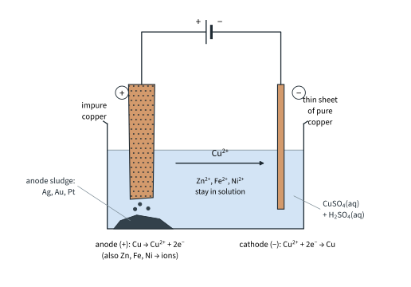

Electrochemistry 3
Topic 12 · Electrochemistry Part 3
On this page
Introduction
A cell (Part 2) uses a spontaneous redox reaction to push electrons round a circuit. Electrolysis does the opposite: an external d.c. supply pushes electrons into one electrode and pulls them out of the other, and so drives a redox reaction that would not happen by itself (ΔG⦵ positive). This Part covers what forms at each electrode, how much forms, and two industrial uses. Part 1 covers half-equations and Part 2 electrode potentials; both are used here.
Key terms
You will use these terms throughout this Part.
| Term | Meaning |
|---|---|
| Electrolysis | The decomposition of a compound, molten or in solution, by passing a direct current through it. |
| Electrolyte | A substance that conducts electricity when molten or in aqueous solution, by the movement of its ions, and is decomposed by it. |
| Anode and cathode (in electrolysis) | The anode is connected to the positive terminal of the supply; oxidation takes place there. The cathode is connected to the negative terminal; reduction takes place there. |
| Inert electrode | An electrode that conducts but does not itself react, e.g. graphite or platinum. |
| Discharge | The gain or loss of electrons by an ion (or molecule) at an electrode, e.g. Cu2+ + 2e− → Cu. |
| Coulomb, C | The unit of charge: the charge passed when a current of 1 ampere flows for 1 second. Q = It. |
| Faraday constant, F | The charge on one mole of electrons: 9.65 × 104 C mol−1 (Data Booklet). F = Le. |
Galvanic and electrolytic cells compared
The two kinds of cell are mirror images (Fig 15 shows an electrolytic cell):
| Galvanic (electrochemical) cell | Electrolytic cell | |
|---|---|---|
| Energy change | chemical energy → electrical energy | electrical energy → chemical energy |
| Reaction | spontaneous: E⦵cell positive, ΔG⦵ negative | not spontaneous: driven by the supply, ΔG⦵ positive |
| Anode (oxidation) | negative | positive |
| Cathode (reduction) | positive | negative |
| What pushes the electrons round the circuit | the cell reaction: the reducing agent at the anode releases them | the d.c. supply: it pushes them into the cathode |

Molten electrolytes
A molten ionic compound contains only its own two ions, so there is no choice: the cation is reduced at the cathode and the anion is oxidised at the anode. For molten sodium chloride:
cathode (−): Na+(l) + e− → Na(l)
anode (+): 2Cl−(l) → Cl2(g) + 2e−
overall: 2NaCl(l) → 2Na(l) + Cl2(g)
This is how sodium is made. For molten lead(II) bromide, lead forms at the cathode and bromine at the anode; at the temperature of the melt the bromine comes off as an orange-brown vapour:
cathode (−): Pb2+(l) + 2e− → Pb(l) anode (+): 2Br−(l) → Br2(g) + 2e−
Aluminium (Further example). Aluminium is extracted by electrolysing aluminium oxide dissolved in molten cryolite, which melts at a much lower temperature than Al2O3 on its own:
cathode (−): Al3+ + 3e− → Al(l) anode (+): 2O2− → O2(g) + 4e−
At the working temperature the oxygen reacts with the carbon anodes, which burn away to CO2 and have to be replaced regularly.
Aqueous electrolytes
An aqueous solution also contains water, and water can be reduced or oxidised too:
at the cathode: 2H2O(l) + 2e− → H2(g) + 2OH−(aq) E⦵ = −0.83 V
at the anode: 2H2O(l) → O2(g) + 4H+(aq) + 4e− E⦵(O2/H2O) = +1.23 V
So at each electrode there is a competition, and E⦵ values decide it (Fig 16). Strictly, −0.83 V is the value with 1 mol dm−3 OH− and +1.23 V the value with 1 mol dm−3 H+; in a neutral solution both are shifted, to about −0.41 V and +0.82 V.1 9476 questions use the Data Booklet values as working values, and so do these notes.
Concentration: chloride ions
For Cl− (+1.36 V) and water (+1.23 V) the values are close, and concentration decides:
- Dilute NaCl(aq): mainly O2 at the anode (with some Cl2).
- Concentrated NaCl(aq) (brine): Cl2 at the anode. The high [Cl−] makes E(Cl2/Cl−) less positive (Part 2: more of the species on the right), and in practice oxygen needs an extra voltage to form at most electrode surfaces.2

Electrode material
An inert electrode (graphite or platinum) only carries electrons. A copper anode is not inert. Cu → Cu2+ + 2e− (E⦵ = +0.34 V) is less positive than water (+1.23 V), and SO42− is not oxidised at all, so the copper anode itself is oxidised and dissolves. That is the basis of copper purification (later in this Part) and of electroplating.
Worked example 1: predicting the products
Predict the product at each electrode, the half-equations, and what is left in solution, for each electrolyte below. The electrodes are inert (graphite or platinum) unless stated. (To answer each one, you have to list every species that could be reduced at the cathode and every species that could be oxidised at the anode, including water, and compare their E⦵ values.)
| Electrolyte | Cathode (−) | Anode (+) | Left in solution |
|---|---|---|---|
| CuSO4(aq) | Cu: Cu2+ + 2e− → Cu | O2: 2H2O → O2 + 4H+ + 4e− | H2SO4: blue fades, solution becomes acidic |
| CuSO4(aq), copper electrodes | Cu: Cu2+ + 2e− → Cu | anode dissolves: Cu → Cu2+ + 2e− | CuSO4, unchanged; colour unchanged |
| NaCl(aq), dilute | H2: 2H2O + 2e− → H2 + 2OH− | mainly O2: 2H2O → O2 + 4H+ + 4e− | NaCl, more concentrated (water is used up) |
| NaCl(aq), concentrated | H2: 2H2O + 2e− → H2 + 2OH− | Cl2: 2Cl− → Cl2 + 2e− | NaOH |
| H2SO4(aq), dilute | H2: 2H+ + 2e− → H2 | O2: 2H2O → O2 + 4H+ + 4e− | H2SO4, more concentrated; H2 : O2 = 2 : 1 by volume |
| NaOH(aq) | H2: 2H2O + 2e− → H2 + 2OH− | O2: 4OH− → O2 + 2H2O + 4e− | NaOH, more concentrated; H2 : O2 = 2 : 1 |
| KI(aq) | H2: 2H2O + 2e− → H2 + 2OH− | I2: 2I− → I2 + 2e− (brown around the anode) | KOH: alkaline |
| AgNO3(aq) | Ag: Ag+ + e− → Ag | O2: 2H2O → O2 + 4H+ + 4e− | HNO3: acidic |
| Na2SO4(aq) | H2: 2H2O + 2e− → H2 + 2OH− | O2: 2H2O → O2 + 4H+ + 4e− | Na2SO4, more concentrated; with Universal Indicator, alkaline round the cathode and acidic round the anode |
Look for the pattern: whenever water is reduced, OH− is left round the cathode; whenever water is oxidised, H+ is left round the anode. In dilute sulfuric acid, sodium hydroxide and sodium sulfate solutions, the overall change is simply 2H2O → 2H2 + O2: four electrons make two H2 and one O2, hence the 2 : 1 ratio by volume.
Fig 17 compares copper(II) sulfate solution with inert and with copper electrodes. Concentrated NaCl (Further example). If the chlorine and the sodium hydroxide are allowed to mix, they react to make bleach: Cl2 + 2NaOH → NaCl + NaClO + H2O, the disproportionation of Part 1. Industry keeps them apart (the In industry box below).


Quantitative electrolysis
Michael Faraday found that the amount of substance liberated at an electrode is proportional to the charge passed. Once you know about electrons this is no surprise: every Cu2+ ion needs exactly two electrons, so the amount of copper deposited is half the amount of electrons passed.
Charge and the Faraday constant
Charge is measured in coulombs. A current of I amperes flowing for t seconds passes a charge
Q = It (Q in C, I in A, t in s)
The charge on one mole of electrons is the Faraday constant, F = 9.65 × 104 C mol−1 (Data Booklet). It is the charge on one electron, e, times the number of electrons in a mole, the Avogadro constant, L:
F = (6.02 × 1023) × (1.60 × 10−19) = 9.63 × 104 C mol−1
The Data Booklet gives 9.65 × 104: the small difference is only because L and e are given to 3 significant figures; with more precise values the product is 96 485 C mol−1. Use 9.65 × 104 C mol−1 in calculations.
Worked example 2: copper and oxygen
Copper(II) sulfate solution is electrolysed with inert electrodes, using a current of 0.500 A for 30.0 min. Calculate the mass of copper deposited and the volume of oxygen given off at r.t.p.
Q = It = 0.500 × (30.0 × 60) = 900 C
n(e−) = Q / F = 900 / (9.65 × 104) = 9.326 × 10−3 mol
(To get the moles of each product, you have to use its half-equation: Cu2+ + 2e− → Cu needs 2 electrons per Cu; 2H2O → O2 + 4H+ + 4e− releases 4 electrons per O2.)
n(Cu) = (9.326 × 10−3) / 2 = 4.663 × 10−3 mol mass = (4.663 × 10−3) × 63.5 = 0.296 g
n(O2) = (9.326 × 10−3) / 4 = 2.332 × 10−3 mol volume = (2.332 × 10−3) × 24 000 = 56.0 cm3
Worked example 3: cells in series
A silver nitrate cell and a copper(II) sulfate cell are connected in series, so the same current flows through both for the same time. 0.540 g of silver is deposited in the first cell. Calculate the mass of copper deposited in the second.
(To answer this, you have to see that the same charge, and so the same amount of electrons, passes through both cells.)
n(Ag) = 0.540 / 107.9 = 5.005 × 10−3 mol = n(e−) (Ag+ + e− → Ag)
n(Cu) = (5.005 × 10−3) / 2 = 2.502 × 10−3 mol mass = (2.502 × 10−3) × 63.5 = 0.159 g
Worked example 4: the charge on an ion
A current of 0.400 A passed for 25.0 min through a solution of a chromium salt deposits 0.108 g of chromium. Find the charge on the chromium ions.
Q = 0.400 × (25.0 × 60) = 600 C n(e−) = 600 / (9.65 × 104) = 6.218 × 10−3 mol
n(Cr) = 0.108 / 52.0 = 2.077 × 10−3 mol
n(e−) / n(Cr) = (6.218 × 10−3) / (2.077 × 10−3) = 2.99 ≈ 3
Three electrons per chromium atom: the ions are Cr3+, and the half-equation is Cr3+ + 3e− → Cr.
Worked example 5: aluminium (Further example)
How much charge is needed to make 1.00 kg of aluminium (Al3+ + 3e− → Al)?
n(Al) = 1000 / 27.0 = 37.04 mol n(e−) = 3 × 37.04 = 111.1 mol
Q = 111.1 × (9.65 × 104) = 1.07 × 107 C
Ten million coulombs for every kilogram: this is why aluminium is made where electricity is cheap.
Worked example 6: coulometric Karl Fischer titration (Further example)
Topic 6 Part 2 described coulometric Karl Fischer titration, in which iodine is made at an anode (2I− → I2 + 2e−) and 1 mol of I2 reacts with 1 mol of water. Show that about 10.7 C of charge is passed for each mg of water.
1 mol of H2O (18.0 g) needs 1 mol of I2, which needs 2 mol of e−: Q = 2 × (9.65 × 104) = 1.93 × 105 C
per mg of water: (1.93 × 105) / (18.0 × 103) = 10.7 C mg−1
Finding the Avogadro constant by experiment
F = Le can be turned round to measure L. Copper(II) sulfate solution is electrolysed between copper electrodes (Fig 19), with a variable resistor to keep the current steady and an ammeter to measure it. The cathode is cleaned, dried and weighed before the experiment. Afterwards it is washed with water, then with propanone (which evaporates quickly), dried, and weighed again.

Worked example 7: finding L (illustrative data)
A steady current of 0.200 A for 50.0 min increased the mass of the cathode by 0.198 g (illustrative data). Use these results, and e = 1.60 × 10−19 C, to find L.
Q = 0.200 × (50.0 × 60) = 600 C
n(Cu) = 0.198 / 63.5 = 3.118 × 10−3 mol n(e−) = 2 × (3.118 × 10−3) = 6.236 × 10−3 mol
charge on 1 mol of electrons, F = 600 / (6.236 × 10−3) = 9.62 × 104 C mol−1
L = F / e = (9.62 × 104) / (1.60 × 10−19) = 6.01 × 1023 mol−1
The cathode is weighed rather than the anode, because the anode can lose extra mass: impurities dissolve, and small pieces of copper may fall off.
Industrial electrolysis
Anodising aluminium
Aluminium is a reactive metal (E⦵ = −1.66 V), yet it is used for window frames, cookware and aircraft. It is protected by a layer of aluminium oxide that forms in air, normally only a few nanometres thick. Anodising makes that layer much thicker. The aluminium object is made the anode in dilute sulfuric acid (Fig 20), with a lead or aluminium sheet as the cathode:
anode (+): 2Al(s) + 3H2O(l) → Al2O3(s) + 6H+(aq) + 6e−
cathode (−): 2H+(aq) + 2e− → H2(g)
You may also see the anode reaction written as the oxidation of water, 2H2O → O2 + 4H+ + 4e−, with the oxygen then oxidising the aluminium surface: either way, the result is more oxide on the aluminium. The layer grows to several micrometres (about 5–25 µm, literature value). It is
- harder and more resistant to scratching than the thin natural layer;
- a better barrier, so the metal resists corrosion much better;
- porous when first formed, so it can take up dyes before the pores are sealed (in hot water), giving coloured aluminium.

Purifying copper
Copper for electrical wiring must be very pure, because small amounts of impurity raise its electrical resistance. Impure copper is purified by electrolysis (Fig 21):
- anode: a thick slab of impure copper;
- cathode: a thin sheet of pure copper;
- electrolyte: copper(II) sulfate solution acidified with sulfuric acid.
anode (+): Cu(s) → Cu2+(aq) + 2e− cathode (−): Cu2+(aq) + 2e− → Cu(s)
Copper moves from the anode to the cathode. What happens to each impurity depends on its E⦵:
- Metals more reactive than copper (Zn, −0.76 V; Fe, −0.44 V; Ni, −0.25 V) are oxidised at the anode along with the copper and go into solution as ions. They are not reduced at the cathode, because their E⦵ values are more negative than that of Cu2+/Cu (+0.34 V): Cu2+ is reduced in preference. So they stay in solution.
- Metals less reactive than copper (Ag, +0.80 V; gold and platinum) are not oxidised. As the copper around them dissolves, they fall to the bottom as anode sludge, which is collected because it is valuable.
The copper on the cathode is about 99.99 % pure (literature value). Because Zn2+, Fe2+ and Ni2+ go into solution but are never deposited, they build up in the electrolyte, so part of it is drawn off and purified from time to time.

Summary
The ideas of this Part in one table.
| Idea | Key points |
|---|---|
| Electrolytic cell | Electrical energy drives a non-spontaneous reaction. Anode positive (oxidation); cathode negative (reduction). |
| Molten | Cation reduced to the metal at the cathode; anion oxidised at the anode (NaCl, PbBr2; Al2O3 in cryolite as a Further example). |
| Aqueous: cathode | Most positive E⦵ reduced: metal ion, or water (−0.83 V) giving H2. K, Na, Ca, Mg, Al ions are never discharged. |
| Aqueous: anode | Least positive E⦵ oxidised: I−, Br−; water (+1.23 V) giving O2 for SO42− and NO3−; Cl− only when concentrated; a copper anode dissolves. |
| Quantities | Q = It; n(e−) = Q / F; moles of product from the half-equation; F = Le = 9.65 × 104 C mol−1; gases 24 dm3 mol−1 at r.t.p. |
| Industry | Anodising: Al object as the anode, thicker Al2O3: harder, corrosion-resistant, can be dyed. Copper purification: impure Cu anode, pure Cu cathode; Zn, Fe, Ni stay in solution; Ag, Au fall as anode sludge. |
Additional information
- Beyond the syllabus: both water half-equations contain H+ or OH−, so their potentials depend on pH (Part 2, concentration). At pH 7 the values are about −0.41 V for reducing water and +0.82 V for oxidising it (literature values, from the Nernst equation). With these values you would predict oxygen rather than bromine from KBr(aq), and hydrogen rather than zinc from a zinc salt; in practice bromine and zinc form, because O2 and H2 need an extra voltage to form at the electrodes (footnote 2). The Data Booklet values give the right answers in these cases, which is one reason 9476 uses them. ↩
- Beyond the syllabus: the extra voltage needed to make a gas form at a useful rate at an electrode is called the overpotential. It is large for O2 at most anodes, and for H2 at some cathodes, which is why a simple comparison of E⦵ values sometimes needs help from experiment. ↩